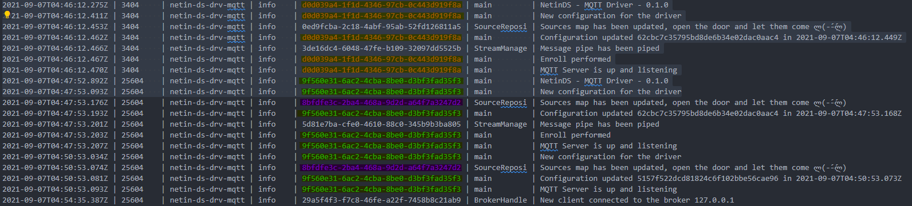

Module @mdf.js/crash
@mdf.js/crash


@mdf.js/crash
Improved, but simplified, error handling
Table of contents
Introduction
The goal of @mdf.js/crash is to provide improved, but simplified, error handling, while standardizing error handling across all MMS modules.
Installation
- npm
npm install @mdf.js/crash
- yarn
yarn add @mdf.js/crash
Information
This library provides us with 3 different types of errors to use depending on the context in which we find ourselves:
- Crash: it is the main type of error, it does not allow adding metadata to the error, which will be specially treated by the logging libraries, as well as relating errors to their causes.
- Multi: it is the type of error mainly used in validation processes in which we can have more than one error that prevents an information input or a group of parameters from being validated. This type of error is the one returned to us by the @ netin-js / doorkeeper validation libraries.
- Boom: this type of error standardizes errors in RESTful environments by providing helpers that allow the easy creation of standardized responses to frontend applications.
Use
Mensajes de error
One of the main and common parameters of the three types of error is the message associated with the error. This message indicates the type of error that occurred, always taking into account the good practices:
- Be clear and unambiguous.
- Be concise and provide accurate information and only what is necessary.
- Don't use technical jargon.
- Be humble, don't blame the user.
- Avoid using negative words.
- Indicates the way to fix it to the user.
- Do not use capital letters.
- Indicates the correct actions, if any.
- If there are details about the error, provide them in the corresponding section.
Traceability identifier
According to the standard RFC 4122, it allows us to associate an identifier of operation or request to the error. This is especially useful for tracing errors in requests or transactions that occur between different systems or libraries. The identifier should be created by the process or system that initiates the operation (Frontend, Service ...), being included in all processes and registers (logging with @mdf.js/logger) so that this can be used in troubleshooting processes. identifier as filter, allowing easy extraction.

Crash
Simple example of using the Crash error type.
import { Crash } from '@mdf.js/crash'
import { v4 } from 'uuid';
const enhancedError = new Crash('Example', v4());
console.log(enhancedError.message); // 'Example'
or even simpler
import { Crash } from '@mdf.js/crash'
const enhancedError = new Crash('Example');
console.log(enhancedError.message); // 'Example'
Crash allows us to add extra information about the error that can be used by higher layers of our application or at the time of recording the errors.
import { Crash } from './Crash';
import fs from 'fs';
import { v4 } from 'uuid';
const operationId = v4();
try {
const myContent = fs.readFileSync('path/to/file');
} catch (error) {
const enhancedError = new Crash(`Error reading the configuration file`, operationId, {
cause: error as Error,
name: 'FileError',
info: {
path: 'path/to/file',
},
});
console.log(enhancedError.trace());
// [ 'FileError: Error reading the configuration file',
// 'caused by Error: ENOENT: no such file or directory, open \'path/to/file\'' ]
}
Crash allows us to easily determine if an error has a specific cause, being able to act differently for each cause.
ourPromiseThatRejectCrash()
.then(()=>{
// Our code in case of success
})
.catch(error => {
if (error.hasCauseWithName('FileError')) {
// Our code in case of file error
} else {
// Our code for the rest type of errors
}
})
Multi
Simple example of using Multi type error.
import { Multi } from '@mdf.js/crash'
import { v4 } from 'uuid';
const enhancedError = new Multi('Example', v4(), {
causes: [new Error('My first check that fail'), new Error('My Second check that fail')]
});
Errors can be added later, which can be especially useful in transformation processes where various errors can appear during execution.
import { Multi, Crash } from '@mdf.js/crash'
import { v4 } from 'uuid';
const arrayOfNumbers: number[] = [];
const operationId = v4();
let enhancedError: Multi | undefined;
for (let idx = 0; idx < 10; idx++) {
arrayOfNumbers.push(Math.random() * (10 - 0) + 0);
}
for (const entry of arrayOfNumbers) {
if (entry > 5) {
const newError = new Crash(`Number of of range`, operationId, {
name: 'ValidationError',
info: {
number: entry,
},
});
if (enhancedError) {
enhancedError.push(newError);
} else {
enhancedError = new Multi(`Errors during validation process`, operationId, {
causes: [newError],
});
}
}
}
if (enhancedError) {
console.log(enhancedError.trace());
}
Boom
The most typical way to use the Boom type of error is through helpers, thanks to them, we can create information-rich errors, within the context of our REST API, in a simple way.
import express from 'express';
import { BoomHelpers } from '@mdf.js/crash';
import { v4 } from 'uuid';
const app = express();
const port = 3000;
app.get('/', (req, res) => {
const enhancedError = BoomHelpers.internalServerError('Error during request processing', v4());
res.status(enhancedError.status).json(enhancedError);
});
app.listen(port, () => {
console.log(`Example app listening at http://localhost:${port}`)
});
Any request to the previous endpoint will return the following result:
{
"uuid": "2a931651-6921-4bda-864e-123b69829cff",
"status": 500,
"code": "HTTP",
"title": "Internal Server Error",
"detail": "Error during request processing"
}
We can even provide more information to the user through the options.
import express from 'express';
import { BoomHelpers, Crash } from '@mdf.js/crash';
import { v4 } from 'uuid';
const app = express();
const port = 3000;
const mock = (req: express.Request, res: express.Response, next: express.NextFunction): void => {
req.body = {};
req.body.reqId = v4();
req.body.order = 'myOrder';
next();
};
function getOrder(order: string, uuid: string): Promise<void> {
return Promise.reject(
new Crash(`The requested record is not present in the system`, uuid, {
name: 'DataNotPresent',
info: { order },
})
);
}
app.use(mock);
app.get('/order', (req, res) => {
getOrder(req.body.order, req.body.reqId)
.then(result => {
res.status(200).json(result);
})
.catch(error => {
const enhancedError = BoomHelpers.badRequest(
'Error getting the requested order',
req.body.reqId,
{
cause: error,
source: {
pointer: req.path,
parameters: { order: req.body.order },
},
name: error.name,
info: {
detail: error.message,
},
links: {
help: 'help/link/about/orders',
},
}
);
res.status(enhancedError.status).json(enhancedError);
});
});
app.listen(port, () => {
console.log(`Example app listening at http://localhost:${port}`);
});
Any request to the previous endpoint will return the following result:
{
"uuid": "59fe72ec-44dc-4cc3-84ec-46c98df00283",
"links": {
"help": "help/link/about/orders"
},
"status": 400,
"code": "DataNotPresent",
"title": "Bad Request",
"detail": "Error getting the requested order",
"source": {
"pointer": "/order",
"parameters": {
"order": "myOrder"
}
},
"meta": {
"detail": "The requested record is not present in the system"
}
}
API
License
Copyright 2024 Mytra Control S.L. All rights reserved.
Use of this source code is governed by an MIT-style license that can be found in the LICENSE file or at https://opensource.org/licenses/MIT.